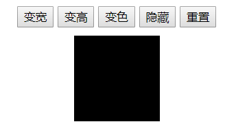
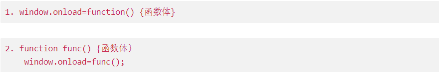

要实现的效果如图所示：查看演示

***
乍一看还以为十分简单，就是简单的点击button时触发的函数来改变样式值，不过做到后面就开始打脸了——“重置”功能。其实要实现重置功能，硬做还是可以的，就是cssText=“整个style表”，但是这么做太暴力了，十分不优雅，结果看了人家的源码真的是佩服的五体投地。
获取内联样式
```javascript
获取外联样式（内部/外部样式表）（待更新）
==也就是说，一般情况下，我们都只能访问和设置行内样式！访问外联样式需要其他方法实现。==
用来设置行内样式。
ele.style.cssText="CSS样式表";//添加行内样式
ele.style.cssText="";//可以清除行内样式这次的小练习中用到了ele.style.cssText=""的用法来实现重置功能，这条语句只会清除行内样式，对样式表中设置的内容没有改动。
window.onload加载事件在页面内容加载完成之后立即执行相应的函数。
使用方法：

onclick有相同用法：
function func() {//function body//}
obj.oncllick = func();
a() && b() :如果执行a()后返回true，则执行b()并返回b的值；如果执行a()后返回false，则整个表达式返回a()的值，b()不执行；
a() || b() :如果执行a()后返回true，则整个表达式返回a()的值，b()不执行；如果执行a()后返回false，则执行b()并返回b()的值；
&& 优先级高于 ||。
alert((1 && 3 || 0) && 4); //结果4
alert(1 && 3 || 0 && 4); //结果3
alert(0 && 3 || 1 && 4); //结果4我的代码：
<!DOCTYPE html>
<html>
<head>
<title>JavaScript Reading Test</title>
<style type="text/css">
.main {
margin: 30px;
text-align: center;
}
#rectangle {
width: 100px;
height: 100px;
margin: 20px auto;
background: red;
}
</style>
</head>
<body>
<div class="main">
<button>变宽</button>
<button>变高</button>
<button>变色</button>
<button>隐藏</button>
<button>重置</button>
<p id="rectangle"></p>
</div>
<script>
function changeCss(oDiv, oAttr, oVal) {
oDiv.style[oAttr] = oVal; //变量访问样式属性，用ele.style['oAttr']
}
window.onload = function() {
var oBtn = document.getElementsByTagName("button");
var oDiv = document.getElementById("rectangle");
var oAttr = ["width", "height", "backgroundColor", "display", "display"];
var oVal = ["200px", "200px", "blue", "none", "block"];
alert()
for(var i = 0; i < oBtn.length; ++ i) {
oBtn[i].index = i;//注意！！
oBtn[i].onclick = function() {
//这里绑定的回调函数是匿名函数，不会执行，但是当事件发生调用函数时，循环已经结束了
if (this.index == 4) { //内部引用自己用this，用oBtn[i]会报错
oDiv.style.cssText = "";
}
//简洁用法：
// this.index == oBtn.length - 1 && (oDiv.style.cssText = "");
changeCss(oDiv, oAttr[this.index], oVal[this.index]);
}
}
}
</script>
</body>
</html>源代码
<!DOCTYPE html>
<html lang="en">
<head>
<meta charset="UTF-8">
<title>Document</title>
</head>
<style>
body{
text-align: center;
}
div{
width: 100px;
height: 100px;
background: black;
margin:20px auto;
}
</style>
<body>
<input type="button" value="变宽" />
<input type="button" value="变高" />
<input type="button" value="变色" />
<input type="button" value="隐藏" />
<input type="button" value="重置" />
<div id="div1"></div>
<script>
var changeStyle = function (elem, attr, value){
elem.style[attr] = value;
};
window.onload = function (){
var oBtn = document.getElementsByTagName("input");
var oDiv = document.getElementById("div1");
var oAtt = ["width","height","background","display","display"];
var oVal = ["200px","200px","red","none","block"];
for (var i = 0; i < oBtn.length; i++){
oBtn[i].index = i;
oBtn[i].onclick = function (){
this.index == oBtn.length - 1 && (oDiv.style.cssText = "");
changeStyle(oDiv, oAtt[this.index], oVal[this.index])
}
}
}
</script>
</body>
</html>这一次的小练习提升的知识点：